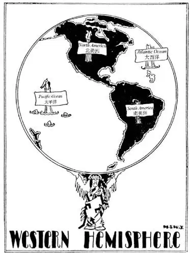
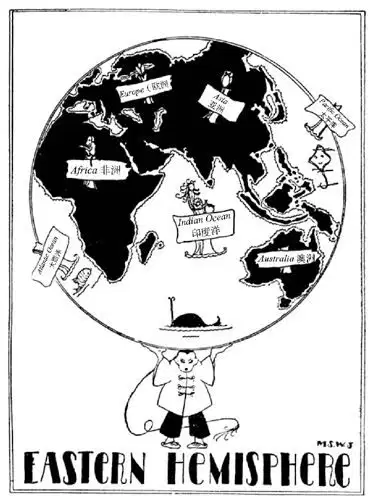

01
The World Through a Spy-Glass
透过小望远镜看到的世界

You have never seen your own face.
This may surprise you and you may say it isn’t so-but it is so.
You may see the end of your nose.
You may even see your lips if you pout out—so.
If you stick out your tongue you may see the tip of it.
But you can’t go over there, outside of yourself, and look at your own face.
Of course you know what your face looks like, because you have seen it in a mirror; but that’s not yourself—it’s only a picture of yourself.
And in the same way no one of us can see our own World—all of it—this World on which we live.
You can see a little bit of the World just around you—and if you go up into a high building you can see still more—and if you go up to the top of a high mountain you can see still, still more—and if you go up in an airplane you can see still, still, still more.
But to see the Whole World you would have to go much higher than that, higher than any one has ever been able to go or could go. You would have to go far, far above the clouds; way, way off in the sky where the stars are—and no one can do that, even in an airplane.
Now you cannot see the World in a mirror as you can see your face. So how do we know what the World looks like ?
A fish in the sea might tell her little fish, “The World is all water—just a huge tub; I’ve been everywhere and I know.” Of course, she wouldn’t know anything different.
A camel in the desert might tell her little camels, “The World is all sand—just a huge sand pile; I’ve been everywhere and I know.”
A polar bear on an iceberg might tell her little polar bears, “The World is all snow and ice—just a huge refrigerator; I’ve been everywhere and I know.”
A bear in the woods might tell her little bear cubs, “The World is all woods—just a huge forest; I’ve been everywhere and I know.”
In the same way, once upon a time, people used to tell their little children, “The World is just a big island like a huge mud pie with some water, some sand, some ice, and some trees on it, and with a cover we call the sky over us all; we’ve been everywhere and we know.”
When some inquisitive child asked, “What does the flat World like a mud pie rest on?” they really truly said, “It rests on the backs of four elephants.”

Western Hemisphere （西半球）
But when the inquisitive child asked, “And what do the elephants stand on?” they really truly said, “On a big turtle.”
Then when the inquisitive child asked, “What does the turtle stand on?” no one could say—for no one could even guess farther than that—so the turtle was left standing—on nothing.
That’s the old story that parents long ago used to tell their children as to what the World was like. But just suppose you could go way, way off above the clouds; way, way off in the sky, sit on a corner of nothing at all, dangle your feet over the edge and look down at the World far, far below. What do you suppose it would really look like? I know—and yet I have never been there.
The World from way off in the sky and through a spy-glass would look just like a full moon—round and white; not round like a plate, but round like a huge snowball. Not exactly white, either, but bright—for the sun shines on this big ball, the World, and makes it light just as the headlight on an automobile shines on the road at night and makes the road light. Of course, the sun can shine on only one side of this big ball at a time; the other side of the World is dark, but the World keeps turning round and round in the sunlight.
If you looked at the World through a telescope—you know what a telescope is: one of those long spy-glasses that make things seem closer and bigger—as men look at the moon, you would see on one side of the World two big patches that look like queerly shaped shadows and on the other side of the World twice as many big patches, four queerly shaped shadows. These patches which look like shadows are really land and are called by a long name: con-ti-nents. These continents have names, and if their names were printed across them in letters a thousand miles high—which they are not—so that the man with a spy-glass could read them, he would read on one side of the World
NORTH AMERICA
SOUTH AMERICA
and if he waited until the World turned round, until the other side showed in the sunlight, as I’ve seen the World do in “the movies,” he would read on this continent EUROPE and on that continent ASIA and on the other continent AFRICA, and the smallest one would have the longest name, AUSTRALIA. At the very bottom would be ANTARCTICA.
We call one side of a piece of money “the head,” because there is usually the head of some one on that side, and the other side we call “the tail,” as that is opposite from the head. It would be easy to tell which side of the World was which if we could call one side heads and the other tails. But there are no heads or tails on the World—only these queer shadows—so we use two big words instead of “heads” and “tails” to tell which side of the World is which. We call one side the “Western Hemisphere” and the other side we call the “Eastern Hemisphere.” Whew! Why don’t they call it something easy?—well, let’s call it “Half-a-Ball,” for that is what Hemisphere means. The Western Half-Ball has two continents and the Eastern Half-Ball has four continents.

Eastern Hemisphere （东半球）
The tip top and the very bottom of the World are called the Poles, although there are no poles. Around the top and bottom Pole it would be all white—snow and ice—for the Poles are so cold there is snow and ice there all the time.
The part of the World that isn’t patches of shadow or snow is water. The water all around the continents is the ocean, and though of course there are no walls nor fences dividing it into different parts, its different parts are called by different names.
Do you know your right hand from your left? Of course you do if you’re over six years old. But do you know the west side from the east side? If you are over nine years old you should. The east is where the sun rises, the west is where it sets. And if your right hand is east, your left hand is west, your face is north and your back is south.
The Atlantic Ocean is on the east side of North and South America. The Pacific Ocean is on the west. The ocean entirely in the Eastern Hemisphere is called “Indian.” No, it is not named for our Indians. At the top of the World is the Arctic Ocean. At the bottom, all around Antarctica, is the Antarctic Ocean. The Arctic and Antarctic Oceans are mostly ice, for it is so cold there the water freezes and stays frozen. If we wanted to put names on the oceans so that a man off in the sky could read them, we would have to stick huge signs in the water, as we can’t paint letters on the ocean.
There is no reason why I should show you the World turned this way with North America on top. I might just as well show it upside down or sideways, for there is no upside nor downside on the World. I suppose the reason the north side is always shown on top is because the people who made maps and geographies all lived in the north part of the World and they wanted their part of the World on top.
So this is our World. You may wonder, “Are there any other Worlds besides ours?” Some have guessed that there may be—that some of those sparks in the sky that look like stars at night may be other Worlds like ours with people living on them. But no one knows, for the strongest telescope is not strong enough for us to see what is on those far off sparks, so we can only guess about them.
【中文阅读】
你从来都没看过你自己的脸。
这样说可能让你惊讶，你也许会说这不可能，但事实的确如此。
你或许能看到你的鼻尖。
你或许能看到你的嘴唇——如果撅起嘴巴的话。
如果伸出舌头，你或许还能看到你的舌尖。
但是你无法离开你自己去看自己的脸。
当然你知道自己长的什么样子，因为你在镜子里看到过自己的脸。但这不是你自己，而只是你的一个图像。
同样的道理，我们中没有人能看到我们居住的这个世界，看不到它的全部。
你可以看到世界的一点点，也就是你自己周围的那点地方；如果你爬到一栋高楼上，就可以看到更多；如果你爬到一座高山顶上，就可以看到更多更多；如果你乘一架飞机向上飞，你可以看到更多更多更多。
但是要看到整个世界，你不得不到一个比那更高的地方，一个比任何人到达过或能够到达的更高的地方。你不得不走到远在云层之上，很高很高的地方，直到星空中老远老远的地方；这没有人能做到，即使坐飞机也做不到。
你无法像在镜子里看见你自己那样来看见这个世界，那么我们怎么知道世界是什么样子的呢？
大海里的鱼会对鱼宝宝们说：“世界都是水——就是好大好大一盆水；我哪儿都去过，我当然知道。”当然，除了水，她不可能知道什么别的事情。
沙漠里的骆驼会对小骆驼们说：“世界都是沙——就是好大好大一堆沙；我哪儿都去过，我当然知道。”
冰山上的北极熊会对小北极熊们说：“世界都是雪和冰——就是好大好大一 个冰箱；我哪儿都去过，我当然知道。”
森林里的熊会对小熊仔说：“世界都是森林——就是一个巨大的森林；我哪儿都去过，我知道就是这样。”
同样，人们从前常常对孩子们说：“世界是一个大大的岛，就像是一个用泥做的大馅饼，上面有水呀、沙呀、冰呀和树呀等等，在我们的上方有一个我们称之为天空的盖子；我们哪儿都去过，我们当然知道。”
当某个好奇的孩子问道：“这个平平的像泥馅饼的世界是放在什么上面的呢？”他们非常真诚地说：“它放在四只大象的背上。”
当这个好奇的孩子又问道：“大象站在什么上呢？”他们非常真诚地说：“一个大海龟身上。”
当这个好奇的孩子又继续问道：“大海龟站在什么上呢？”没人能回答，因为没人能想那么远，因此就让大海龟这么站着——悬空站着。
那就是父母们很久以前常告诉孩子们的关于世界是什么样子的老一套说法。但是想象一下你可以到云层之上很高很高的地方，在天空中老远老远的地方，坐在一个什么都没有的角落，把脚放在边上垂下来，向下看着这个远在下方的世界，你认为它实际上会是什么样子的呢？我知道是什么样子，不过我从没去过那里。
在天空深处透过小望远镜看到的世界就像一轮满月——又圆又白；它并不是像盘子那样的圆，而是像个大雪球那样的圆。也并不是真正的白，而是明亮，因为太阳光照在世界这个大球上，使它发光，就像汽车的前灯在夜晚照在路上使路变亮。当然太阳一次只能照在世界的一面上；世界的另一面就是黑暗的，但它不停地在阳光中转啊转啊。
如果你用望远镜看世界的话（你知道望远镜是什么吧？就是一种长的小望远镜，可以使东西看起来更近更大），就像人们观察月亮那样，你会发现在世界的一面有两块大斑块，看起来就像形状奇怪的阴影，而在世界的另一面会有这面两倍大的斑块，四个形状奇怪的阴影。这些看起来像阴影的斑块实际上是土地，它们有个很深奥的名字：大陆。这些大陆都有自己的名字，如果他们的名字在距大陆上方1000英里的高度印出来的话（当然是不可能的了），这样拿着小望远镜的人就可以看得清，他会看到在世界的一面写着：
北美洲
南美洲
如果他在那等着直到世界的另一面转到太阳光下时，就像我在电影院里看到的那样，他会看到在这一个大陆上写着欧洲，那一个写着亚洲，还有一个写着非洲，最小的那个写着澳洲，最下面的是南极洲。
我们把硬币的一面叫做“正面”，因为那一面通常会有某个人的头像在上面；另一面叫做“反面”，因为它和正面正相反。如果能把世界的一面叫做正面而另一面叫做反面的话，会更容易区分世界的每一面。但是世界上没有正反面——只有这些奇怪的阴影——因此我们不用“正面”、“反面”而用两个大词来区分世界的这两面。我们把一面叫做“西半球”，另一面叫做“东半球”。咳，为什么不用简单点的词呢？嗯，好吧，我们可以把它叫做“半个球”，“半球”就是这个意思。西边半个球有两个大洲，而东边半个球有四个大洲。
世界的最顶端和最下端叫做极地，尽管那儿并没有杆子 [1] 。在上下两极到处都是白色的——冰和雪——因为极地地区非常的寒冷，终年都有冰雪。
世界上没有阴影斑块和雪斑块的部分是水。环绕着大陆的水叫做海洋，尽管并没有围墙或者篱笆把它们分成不同的部分，海洋的不同部分还是有它们自己不同的名字。
你能分清自己的左右手吗？当然能，如果你超过6岁的话。但你能分清东西方向吗？如果你超过9岁了，就该分得清了。东方是太阳升起的地方，而西方是太阳落山的地方。如果你的右手是东方，你的左手是西方，那么你的脸就是北方，你的后背就是南方。
大西洋位于南北美洲的东边，太平洋在西边。全部在东半球的海洋叫做印度洋，起这个名字不是指美国的印第安人。在世界的最顶部是北冰洋。在最底部，环绕着南极洲的是南冰洋 [2] 。北冰洋和南冰洋大部分都是冰，因为那里太冷了，水都结冰了，一直处于冷冻状态。如果我们要在这里的海洋上写上字让天空中的人能看得到，我们得在水上贴上巨大的标志，因为没人能在海洋上画上字。
并没有什么特别的原因让我把这个世界以北美洲在上的方式展示给你们看。我当然也可以把它上下颠倒过来或者斜向一边放，因为世界上根本就没有上部和下部之分。我想北半边总是被放在上面是因为绘制地图研究地理的人都住在北半边，他们想让他们那边在上边。
这就是我们的世界。你也许会想：“除了我们的世界之外，还有其他世界吗？”有人猜也许会有——夜晚的天空中闪闪发光的像星星一样的亮点也许就是其他的世界，像我们的一样，上面住着人。但是没人知道，因为就是最高级的望远镜也不足以让我们看清离我们那么远的小亮点上有些什么，所以我们只能猜猜而已。